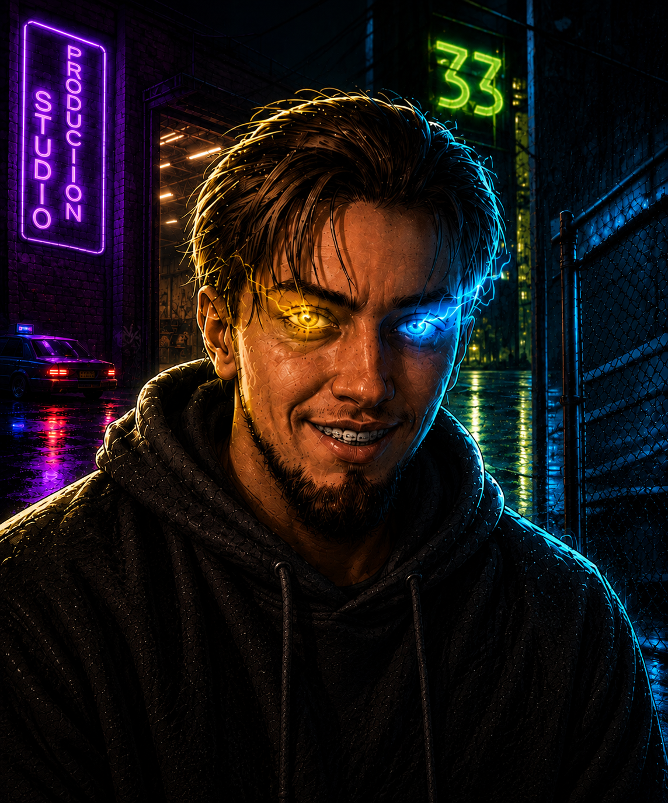

PERSONNEL / 01
Георгий
Гена. Генцо. Геноцид... А на самом деле — Георгий.
Разработка · Тестирование · Аналитика
Человек, который умудряется находить проблемы там, где остальные ещё даже не успели понять, что проблема вообще существует.
Помогает с тестированием сайта TODM, проверяет новые функции и участвует в поиске технических решений. Занимается созданием онлайн-версии настольной игры и анализирует практически всё, до чего может дотянуться — от механик и интерфейсов до идей, которые ещё только собираются стать частью проекта.
Одним словом — мегамозг.